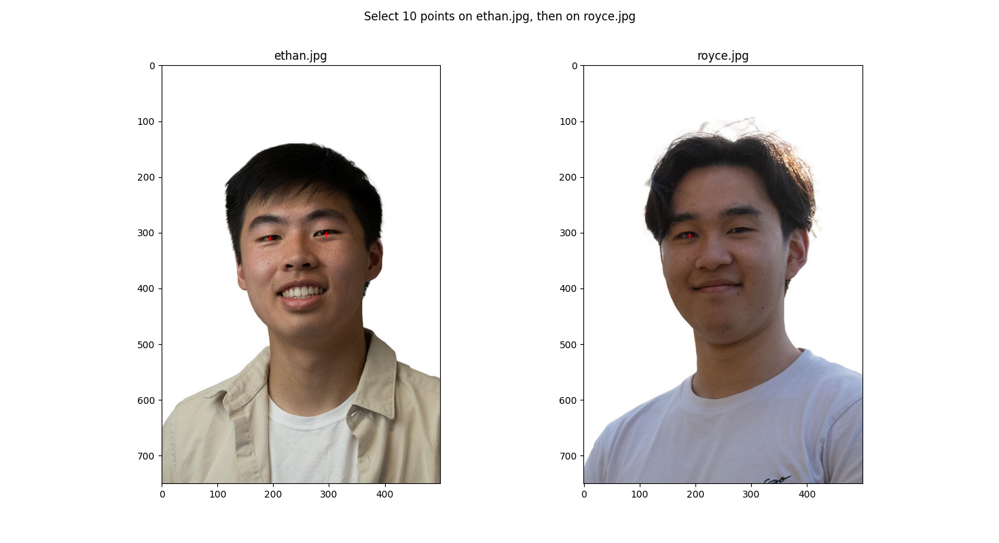
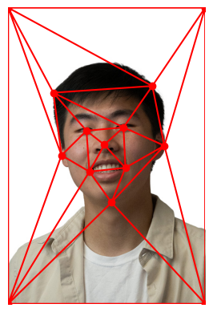
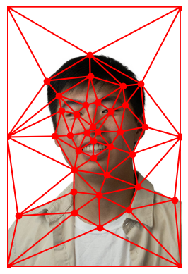
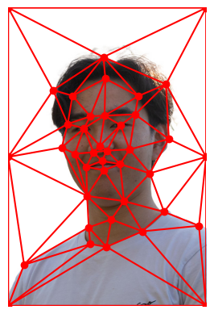
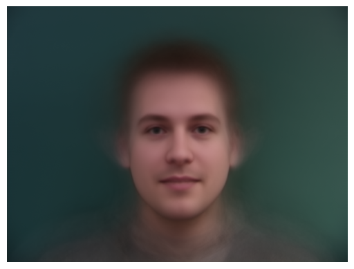
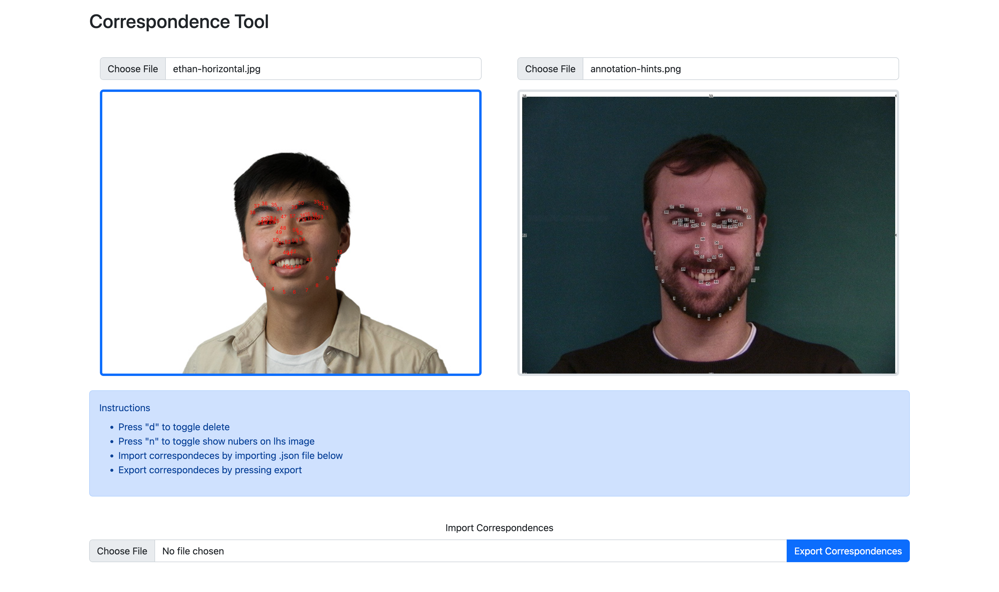
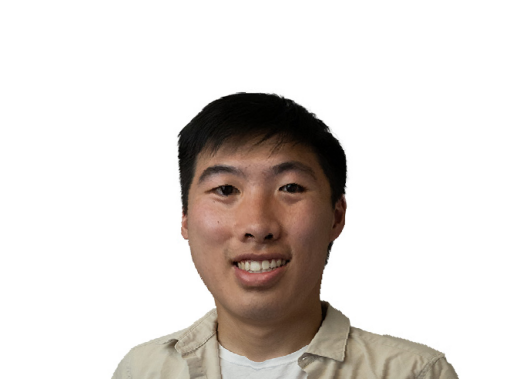
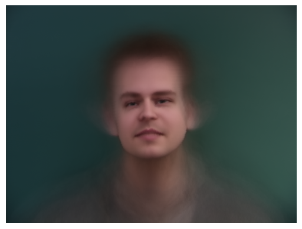

In order to morph two faces together, I manually defined correspondences between the two faces. Then, a Delaunay
triangulation can be applied on the average points between the pair of correspondences. With the triangulation in hand,
it is possible to calculate the forward / backward affine transformation matrices between triangulations in the average
shape and each of the source images. With these matrices, it is already possible to do forward warping.
However, I decided to use backward warping which allows for seamless reconstruction of the final
image. More specifically, I am able to apply the inverse affine transformation matrix on coordinate points within each
triangulation then use a ratio to merge the resulting source colors.
Part 1. Defining Correspondences
In order to define correspondences on the image, I first coded a rudimentary tool with ginput that worked
decently well.

Picker

Result on Ethan
However, once I began to select a lot more correspondences to produce better morphs, it became quickly apparent that
it was very hard to keep track of the order at which I clicked. This is when I decided to use an online tool made by a
previous student: https://cal-cs180.github.io/fa23/hw/proj3/tool.html

Result on Ethan

Result on Royce
The above figure also shows the Delaunay triangulation being computed on the correspondence points. I also found that
automatically adding correspondences for the corner of the image also yielded better morphing around the edges of the face.
Part 2. Computing the "Mid-way Face"
Using the high level process described in the overview, I computed the mid-way face between my friend and I.
Specifically, I used a warping and dissolving factor of 0.5 to have half way shape and colors from both of the input faces.
Although I ran into a lot of issues with the column vs row storage of the points, I eventually decided to stick with
the lecture format and calculated the affine matrix with the points stacked horizontally. Then, the transformation matrix
was applied on all the points in each triangulation that was generated with ski.draw.polygon.
Input 1
Morph
Input 2
Part 3. The Morph Sequence
By re-using the code from the previous part and parameterizing the dissolve and warp fractions, I was also able to generate
an image sequence that represents the intermediate progress between the Ethan geometry (& colors) and that of Royce's.
Ethan -> Royce
Part 4. The "Mean face" of a population
After downloading the Danes dataset,
I was able to merge all of the pre-annotated correspondences into an average shape. This average shape was then used to morph
all of the faces in the dataset into the same average shape to generate an average face of the population.

Average face of Danes
Then, to test how my face would warp into the average geometry of the Danes population, I found the same correspondences
on my own face with the previously mentioned online labeling tool. Additionally, I tried to morph the average of the
Danes population into my facial geometry.

Online Labeling Tool

Ethan morphed into Danes

Danes morphed into Ethan
Part 5. Caricatures: Extrapolating from the mean
By deviating from the average shape of the Danes, I was able to create a caricature of my face:
Ethan morphed into Danes
Ethan morphed slightly
Specifically, I used an alpha of 0.75 when adding back the delta X.